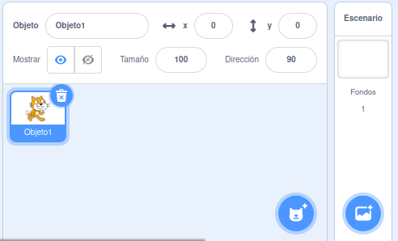

Tema 2: Scratch
Introducción
Scratch es un lenguaje visual de programación centrado en fomentar la creatividad y el pensamiento lógico. Los alumnos van cogiendo soltura y asimilando conceptos, ideas básicas y flujos de trabajo sobre programación y pensamiento computacional de manera divertida y atrayente.
La programación se realiza utilizando bloques que van uniendo como si de un puzle se tratara. Una vez unidos los bloques, se ejecutarán en la secuencia establecida.
Es un lenguaje divertido y atractivo. Los bloques tienen un determinado color y están agrupados por funcionalidades. Se arrastran y sueltan para obtener un resultado inmediato. Los proyectos que se pueden desarrollar van desde crear movimientos, añadir sonidos y cambiar escenarios hasta crear juegos y animaciones siempre de manera sencilla, contribuyendo a desarrollar su creatividad.
Plataforma
La plataforma en la que se van a desarrollar las actividades de programación con Scratch será online, aunque también se puede instalar de forma local. Optamos por la versión Online porque de esa forma podemos desarrollar las aplicaciones en cualquier lugar en el que estemos siempre que tengamos conexión a internet utilizando un ordenador, tablet, móvil… La dirección es: https://scratch.mit.edu/
Entorno
El entorno de la aplicación es el siguiente: Izquierda: Zona de selección de bloques
Centro: Zona de creación de proyecto
Derecha: Zona de simulación y propiedades
Bloques
Los bloques se organizan por tipos. Según el tipo tienen asignado un color de manera que sea más sencillo trabajar con ellos.
Escenario
En la pestaña Escenario podemos añadir tantos fondos como queramos.
Posteriormente en la aplicación, podremos hacer que esos fondos vayan cambiando.

Objetos
En la zona de Objetos podemos añadir tantos personajes como queramos. Posteriormente en la aplicación, podremos hacer que esos personajes interactúen entre ellos o con el usuario. 
Barra Superior
En la barra superior tenemos varias opciones como son:
-
Cambiar el idioma
-
Guardar o Abrir un Proyecto
-
Ver tutoriales
-
Ponerle nombre al proyecto
-
Compartir ese proyecto con otras personas
-
Ver el proyecto en su página
-
Ver perfil o cerrar sesión
Probar Proyecto
En la zona superior derecha podemos:
- probar nuestro proyecto, haciendo clic en la bandera
- detener nuestro proyecto, haciendo clic en la señal de stop
- cambiar la visualización, haciendo que la zona que queramos se vea de mayor o menor tamaño
- ver el proyecto en pantalla completa